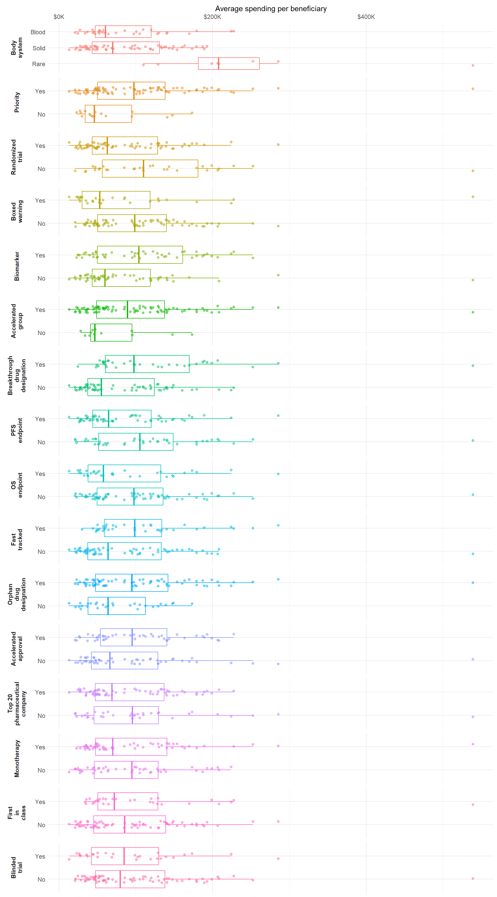
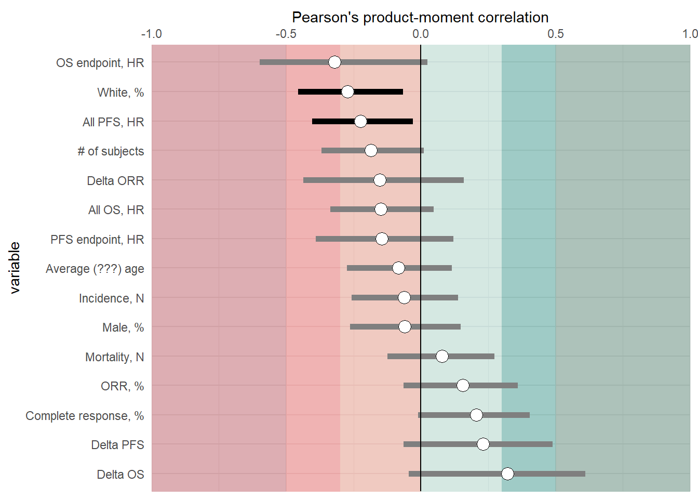
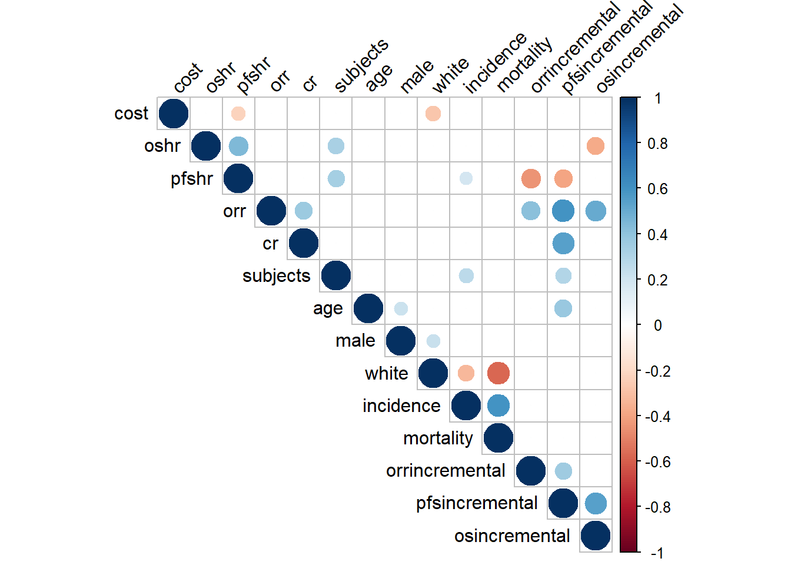
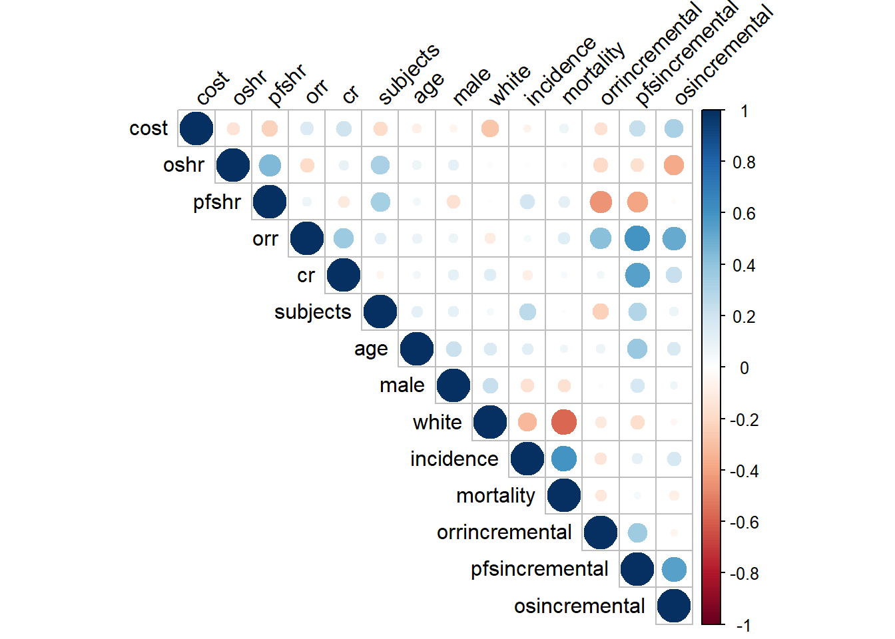

Code
library(tidyverse)
library(gt)
library(gtsummary)An analysis of the cost of oncology drugs by differing factors.
library(tidyverse)
library(gt)
library(gtsummary)data1 <- readxl::read_xlsx("import.xlsx", sheet = 1) |>
janitor::clean_names()
data_cat <- data1 |>
rename(cost = averagespendingperbeneficiary) |>
rename(tumortype = organsystem,
tumortype_sub = organsystemgroup,
tumortype_cat = organsystemgroup2) |>
select(-lineoftherapy) |>
select(cost, year, tumortype, tumortype_sub, tumortype_cat, os, pfs, top20pharmacompany, firstinclass:acceleratedgroup, biomarker:mono) |>
mutate(cost = as.numeric(cost)) |>
cbind(select(data1, lineoftherapy))Uses the average-spending-per-beneficiary as the outcome variable. Medians (IQR) for each variable/group. The N is the number of drug approval
levels_list <- lapply(c("tumortype","tumortype_sub","tumortype_cat"), function(x) {
data_cat |>
summarise(median = median(cost, na.rm = T), .by = x) |>
arrange(-median)
})
names(levels_list) <- c("tumortype","tumortype_sub","tumortype_cat")
cat_meds <- data_cat |>
mutate(tumortype = factor(tumortype, levels = levels_list$tumortype$tumortype),
tumortype_sub = factor(tumortype_sub, levels = levels_list$tumortype_sub$tumortype_sub),
tumortype_cat = factor(tumortype_cat, levels = levels_list$tumortype_cat$tumortype_cat),
across(os:mono, ~ ifelse(.x == "1", "Yes", "No")),
across(os:mono, ~ factor(.x, levels = c("Yes", "No")) )) |>
tbl_continuous(variable = cost,
label = list(year ~ "Approval year",
tumortype ~ "Tumor type",
tumortype_sub ~ "Body system, granular",
tumortype_cat ~ "Body system",
os ~ "OS endpoint",
pfs ~ "PFS endpoint",
top20pharmacompany ~ "Top 20 pharmaceutical company",
firstinclass ~ "First in class",
orphan ~ "Orphan drug designation",
fasttrack ~ "Fast tracked",
breakthrough ~ "Breakthrough drug designation",
priority ~ "Priority",
acceleratedapproval ~ "Accelerated approval",
acceleratedgroup ~ "Accelerated group",
biomarker ~ "Biomarker",
boxedwarning ~ "Boxed warning",
lineoftherapy ~ "Line of therapy",
blinded ~ "Blinded trial",
randomized ~ "Randomized trial",
mono ~ "Monotherapy"
),
statistic = everything() ~ "${median} (${p25}-${p75})") |>
add_p() |>
bold_labels()
cat_sum <- data_cat |>
mutate(tumortype = factor(tumortype, levels = levels_list$tumortype$tumortype),
tumortype_sub = factor(tumortype_sub, levels = levels_list$tumortype_sub$tumortype_sub),
tumortype_cat = factor(tumortype_cat, levels = levels_list$tumortype_cat$tumortype_cat),
across(os:mono, ~ ifelse(.x == "1", "Yes", "No")),
across(os:mono, ~ factor(.x, levels = c("Yes", "No")) )
) |>
select(-cost) |>
tbl_summary(label = list(year ~ "Approval year",
tumortype ~ "Tumor type",
tumortype_sub ~ "Body system, granular",
tumortype_cat ~ "Body system",
os ~ "OS endpoint",
pfs ~ "PFS endpoint",
top20pharmacompany ~ "Top 20 pharmaceutical company",
firstinclass ~ "First in class",
orphan ~ "Orphan drug designation",
fasttrack ~ "Fast tracked",
breakthrough ~ "Breakthrough drug designation",
priority ~ "Priority",
acceleratedapproval ~ "Accelerated approval",
acceleratedgroup ~ "Accelerated group",
biomarker ~ "Biomarker",
boxedwarning ~ "Boxed warning",
lineoftherapy ~ "Line of therapy",
blinded ~ "Blinded trial",
randomized ~ "Randomized trial",
mono ~ "Monotherapy"
),
type = list(
everything() ~ "categorical"
))|>
bold_labels()
tbl_merge(list(cat_meds, cat_sum), tab_spanner = c("**Median (IQR)**", "**N (%)**"))| Characteristic | Median (IQR) | N (%) | |
|---|---|---|---|
| N = 1131 | p-value2 | N = 1133 | |
| Approval year | <0.001 | ||
| 2012 | $37,169 ($30,956-$39,792) | 11 (9.7%) | |
| 2013 | $39,798 ($33,882-$51,569) | 8 (7.1%) | |
| 2014 | $48,193 ($44,937-$54,728) | 8 (7.1%) | |
| 2015 | $62,759 ($40,951-$78,222) | 14 (12%) | |
| 2016 | $74,356 ($61,765-$86,605) | 4 (3.5%) | |
| 2017 | $119,437 ($103,920-$140,641) | 12 (11%) | |
| 2018 | $132,501 ($95,225-$183,374) | 16 (14%) | |
| 2019 | $121,308 ($95,919-$136,871) | 10 (8.8%) | |
| 2020 | $153,939 ($49,957-$199,844) | 16 (14%) | |
| 2021 | $98,488 ($84,904-$118,848) | 14 (12%) | |
| Tumor type | 0.004 | ||
| BPDCN | $538,949 ($538,949-$538,949) | 1 (0.9%) | |
| GIST | $269,083 ($260,857-$277,310) | 2 (1.8%) | |
| Rare | $203,674 ($201,296-$206,051) | 4 (3.5%) | |
| AML | $179,567 ($128,140-$224,287) | 5 (4.4%) | |
| Cholangiocarcinoma | $158,394 ($134,243-$182,546) | 2 (1.8%) | |
| ALL | $140,447 ($140,447-$140,447) | 3 (2.7%) | |
| Lung | $140,306 ($78,483-$167,561) | 17 (15%) | |
| symptomatic tenosynovial giant cell tumor | $129,069 ($129,069-$129,069) | 1 (0.9%) | |
| RCC | $118,848 ($80,262-$133,305) | 3 (2.7%) | |
| Ovarian | $98,855 ($74,545-$109,146) | 3 (2.7%) | |
| Lymphoma | $97,576 ($57,653-$109,610) | 11 (9.7%) | |
| Breast | $86,129 ($54,984-$116,876) | 12 (11%) | |
| Prostate | $85,205 ($33,869-$136,679) | 5 (4.4%) | |
| CLL | $74,356 ($49,622-$102,260) | 3 (2.7%) | |
| Bladder | $71,568 ($50,074-$100,169) | 4 (3.5%) | |
| cutaneous squamous cell carcinoma | $63,668 ($63,668-$63,668) | 1 (0.9%) | |
| Merkel | $61,778 ($61,778-$61,778) | 1 (0.9%) | |
| Thyroid | $53,098 ($45,134-$61,063) | 2 (1.8%) | |
| Multiple Myeloma | $52,690 ($39,414-$62,057) | 10 (8.8%) | |
| Leukemia | $52,338 ($52,338-$52,338) | 1 (0.9%) | |
| Melanoma | $45,871 ($42,438-$71,503) | 7 (6.2%) | |
| CML | $45,692 ($41,683-$50,514) | 4 (3.5%) | |
| Gastric | $35,980 ($35,980-$35,980) | 1 (0.9%) | |
| Basal Cell Carcinoma | $29,175 ($26,120-$32,230) | 2 (1.8%) | |
| Colorectal | $27,629 ($20,397-$49,160) | 3 (2.7%) | |
| STS | $NA ($NA-$NA) | 2 (1.8%) | |
| Pancreatic | $NA ($NA-$NA) | 1 (0.9%) | |
| Endometrial | $NA ($NA-$NA) | 1 (0.9%) | |
| Cervical | $NA ($NA-$NA) | 1 (0.9%) | |
| Body system, granular | 0.009 | ||
| blastic plasmacytoid dendritic cell neoplasm | $538,949 ($538,949-$538,949) | 1 (0.9%) | |
| GIST | $269,083 ($260,857-$277,310) | 2 (1.8%) | |
| neurofibromatosis type 1 | $208,429 ($208,429-$208,429) | 1 (0.9%) | |
| neurotrophic receptor tyrosine kinase (NTRK) gene fusion | $198,919 ($198,919-$198,919) | 1 (0.9%) | |
| cholangiocarcinoma | $158,394 ($134,243-$182,546) | 2 (1.8%) | |
| Lung | $140,306 ($78,483-$167,561) | 17 (15%) | |
| tenosynovial giant cell tumor | $129,069 ($129,069-$129,069) | 1 (0.9%) | |
| Renal | $118,848 ($80,262-$133,305) | 3 (2.7%) | |
| Gynecologic | $98,855 ($74,545-$109,146) | 5 (4.4%) | |
| Lymphoma | $97,576 ($57,653-$109,610) | 11 (9.7%) | |
| Breast | $86,129 ($54,984-$116,876) | 12 (11%) | |
| Prostate | $85,205 ($33,869-$136,679) | 5 (4.4%) | |
| Leukemia | $79,985 ($48,510-$137,876) | 16 (14%) | |
| Bladder | $71,568 ($50,074-$100,169) | 4 (3.5%) | |
| Thyroid | $53,098 ($45,134-$61,063) | 2 (1.8%) | |
| Multiple Myeloma | $52,690 ($39,414-$62,057) | 10 (8.8%) | |
| Skin | $45,871 ($37,542-$62,723) | 11 (9.7%) | |
| Gastric | $35,980 ($35,980-$35,980) | 1 (0.9%) | |
| CRC | $27,629 ($20,397-$49,160) | 3 (2.7%) | |
| PEDS Neuroblastoma | $NA ($NA-$NA) | 2 (1.8%) | |
| Soft Tissue Sarcomas | $NA ($NA-$NA) | 2 (1.8%) | |
| Gastroenteropancreatic neuroendocrine tumors | $NA ($NA-$NA) | 1 (0.9%) | |
| Body system | <0.001 | ||
| Rare | $207,563 ($181,457-$260,857) | 13 (12%) | |
| Solid | $69,789 ($43,377-$130,866) | 63 (56%) | |
| Blood | $60,352 ($47,234-$120,228) | 37 (33%) | |
| OS endpoint | 0.2 | ||
| Yes | $57,653 ($37,908-$132,501) | 37 (33%) | |
| No | $97,576 ($49,705-$135,584) | 76 (67%) | |
| PFS endpoint | 0.058 | ||
| Yes | $64,365 ($44,003-$120,228) | 62 (55%) | |
| No | $105,392 ($51,848-$148,717) | 51 (45%) | |
| Top 20 pharmaceutical company | 0.7 | ||
| Yes | $69,027 ($47,234-$137,116) | 73 (65%) | |
| No | $95,636 ($45,573-$129,617) | 40 (35%) | |
| First in class | 0.5 | ||
| Yes | $72,072 ($50,516-$128,837) | 38 (34%) | |
| No | $85,260 ($45,298-$138,882) | 75 (66%) | |
| Orphan drug designation | 0.092 | ||
| Yes | $94,814 ($47,714-$142,165) | 80 (71%) | |
| No | $63,668 ($37,908-$112,758) | 33 (29%) | |
| Fast tracked | 0.034 | ||
| Yes | $98,488 ($59,220-$134,051) | 42 (37%) | |
| No | $63,668 ($37,570-$133,174) | 71 (63%) | |
| Breakthrough drug designation | 0.003 | ||
| Yes | $97,576 ($60,352-$169,585) | 41 (36%) | |
| No | $55,134 ($37,570-$124,184) | 72 (64%) | |
| Priority | 0.014 | ||
| Yes | $97,576 ($50,305-$138,294) | 93 (82%) | |
| No | $45,961 ($34,284-$94,814) | 20 (18%) | |
| Accelerated approval | 0.14 | ||
| Yes | $95,169 ($54,015-$140,738) | 54 (48%) | |
| No | $66,347 ($42,257-$128,837) | 59 (52%) | |
| Accelerated group | 0.093 | ||
| Yes | $89,188 ($48,929-$137,705) | 100 (88%) | |
| No | $46,597 ($41,206-$95,019) | 13 (12%) | |
| Biomarker | 0.023 | ||
| Yes | $103,920 ($49,970-$161,351) | 53 (47%) | |
| No | $59,747 ($43,421-$118,995) | 60 (53%) | |
| Boxed warning | 0.026 | ||
| Yes | $52,916 ($29,991-$118,848) | 33 (29%) | |
| No | $98,488 ($50,305-$140,153) | 80 (71%) | |
| Blinded trial | 0.6 | ||
| Yes | $84,773 ($42,295-$129,927) | 30 (27%) | |
| No | $79,630 ($47,812-$137,949) | 83 (73%) | |
| Randomized trial | 0.012 | ||
| Yes | $62,759 ($43,421-$128,372) | 74 (65%) | |
| No | $109,850 ($56,516-$181,155) | 39 (35%) | |
| Monotherapy | 0.9 | ||
| Yes | $69,789 ($47,619-$140,641) | 61 (54%) | |
| No | $94,814 ($45,961-$129,231) | 52 (46%) | |
| Line of therapy | 0.021 | ||
| 1 | $94,814 ($39,798-$149,213) | 41 (36%) | |
| 2 | $98,855 ($50,374-$139,471) | 53 (47%) | |
| 3 | $51,358 ($39,143-$65,070) | 16 (14%) | |
| 4 | $285,536 ($285,536-$285,536) | 1 (0.9%) | |
| 5 | $36,943 ($28,956-$44,930) | 2 (1.8%) | |
| 1 cost: $Median ($25%-$75%) | |||
| 2 Kruskal-Wallis rank sum test; Wilcoxon rank sum test | |||
| 3 n (%) | |||
This is the same as the above table but only for binary variables and as a figure
data_plot1 <- data_cat |>
mutate(tumortype = factor(tumortype, levels = levels_list$tumortype$tumortype),
tumortype_sub = factor(tumortype_sub, levels = levels_list$tumortype_sub$tumortype_sub),
tumortype_cat = factor(tumortype_cat, levels = levels_list$tumortype_cat$tumortype_cat),
across(os:mono, ~ ifelse(.x == "1", "Yes", "No")),
across(os:mono, ~ factor(.x, levels = c( "No", "Yes")) )
)
df_varNames <- cat_sum$table_body |>
select(variable, var_label) |>
distinct() |>
filter(!(variable %in% c("tumortype", "tumortype_sub" ))) |>
mutate(var_label = gsub("\\s", "\n", var_label),
var_label = gsub("Top\n20", "Top 20", var_label),
var_label = gsub("\nof", " of", var_label))
plot1_facetLevs <- data_plot1 |>
pivot_longer(cols = c(tumortype, tumortype_sub, tumortype_cat, os, pfs, top20pharmacompany, firstinclass:acceleratedgroup, biomarker:mono),
names_to = "var",
values_to = "label") |>
filter(!(var %in% c("tumortype", "tumortype_sub" ))) |>
summarize(median = median(cost, na.rm = T), .by = c(var, label)) |>
mutate(diff = abs(median - lag(median)), .by = var,
n = n()) |>
# filter(n == 2 & !is.na(diff)) |>
filter(!is.na(diff)) |>
arrange(-diff) |>
distinct(var, .keep_all = T) |>
mutate(rank = row_number(),
rank = ifelse(var == "year", 999, rank)) |>
arrange(rank) |>
select(-label)
data_plot1 |>
pivot_longer(cols = c(tumortype, tumortype_sub, tumortype_cat, os, pfs, top20pharmacompany, firstinclass:acceleratedgroup, biomarker:mono),
names_to = "var",
values_to = "label") |>
mutate(label_full = paste0(var, "_", label)) |>
filter(!(var %in% c("tumortype", "tumortype_sub", "year"))) |>
mutate(var = factor(var, levels = plot1_facetLevs$var)) |>
# filter(var %in% c("year", "top20pharmacompany")) |>
ggplot(aes(x = cost, y = label, color = var)) +
facet_wrap(~ var, ncol = 1, scales = "free_y",
strip.position = "left" , labeller = labeller(var = setNames(unlist(df_varNames$var_label), unique(df_varNames$variable)))) +
geom_boxplot(fill = NA, outlier.shape = NA) +
geom_point(alpha = 0.5, position = position_jitter(height = 0.15) ) +
scale_x_continuous(labels = scales::label_dollar(scale = .001, suffix = "K"), position = "top") +
labs(x = "Average spending per beneficiary") +
theme_minimal() +
theme(strip.placement = "outside",
strip.text = element_text(face = "bold"),
panel.grid.minor.y = element_blank(),
legend.position = "none",
axis.title.y = element_blank())
data_cont <- data1 |>
rename(cost = averagespendingperbeneficiary) |>
select(cost, oshr, pfshr, orr, cr, subjects, age, male, white, incidence, mortality,
orrincremental, pfsincremental, osincremental) |>
mutate(across(everything(), as.numeric))
pearson_list <- lapply(names(data_cont)[-1], function(x) {
cor.test(data_cont$cost, data_cont[[x]], method = 'pearson')
})
names(pearson_list) <- names(data_cont)[-1]
pearson_list$oshr_clean <- data1 |>
rename(cost = averagespendingperbeneficiary) |>
select(cost, os, oshr) |>
filter(os == 1) |>
mutate(cost = as.numeric(cost),
oshr = as.numeric(oshr)) |>
filter(!is.na(cost)) %>%
do(mod = cor.test(.$cost, .$oshr, method = "pearson")) |>
pull(mod) |>
pluck(1)
pearson_list$pfshr_clean <- data1 |>
rename(cost = averagespendingperbeneficiary) |>
select(cost, pfs, pfshr) |>
filter(pfs == 1) |>
mutate(cost = as.numeric(cost),
pfshr = as.numeric(pfshr)) |>
filter(!is.na(cost)) %>%
do(mod = cor.test(.$cost, .$pfshr, method = "pearson")) |>
pull(mod) |>
pluck(1)
cost_correlations <- bind_rows(lapply(pearson_list, broom::tidy), .id = "variable") |>
rename(degreesF = parameter,
Tstatistic = statistic)Bolded indicated that the p-value is < 0.05.
back_color <- tibble(xmin = c(0, 0.3, 0.5),
xmax = c(0.3, 0.5, 1),
shade = c("#D9725B", "#D93636", "#A62934"),
dir = -1) |>
bind_rows(tibble(xmin = c(0, 0.3, 0.5),
xmax = c(0.3, 0.5, 1),
shade = c("#8FC1B5", "#007566", "#265C4B"),
dir = 1) ) |>
mutate(xmin = xmin * dir,
xmax = xmax *dir,
ymin = -1,
ymax = nrow(cost_correlations)+1)
plot2_ylabs <- c("oshr" = "All OS, HR",
"pfshr" = "All PFS, HR",
"orr" = "ORR, %",
"cr" = "Complete response, %",
"subjects" = "# of subjects",
"age" = "Average (???) age",
"male" = "Male, %",
"white" = "White, %",
"incidence" = "Incidence, N",
"mortality" = "Mortality, N",
"pfshr_clean" = "PFS endpoint, HR",
"oshr_clean" = "OS endpoint, HR",
"orrincremental" = "Delta ORR",
"pfsincremental" = "Delta PFS",
"osincremental" = "Delta OS"
)
back_alp = 0.03
cost_correlations |>
mutate(sign = ifelse(p.value <= 0.05, "sign", "notsign")) |>
mutate(variable = fct_reorder(factor(variable), -estimate)) |>
ggplot(aes(y = variable, x = estimate)) +
geom_rect(xmin = back_color$xmin[1], xmax = back_color$xmax[1],
ymin = back_color$ymin[1], ymax = nrow(cost_correlations)+1,
fill = back_color$shade[1],
alpha = back_alp) +
geom_rect(xmin = back_color$xmin[2], xmax = back_color$xmax[2],
ymin = back_color$ymin[2], ymax = nrow(cost_correlations)+1,
fill = back_color$shade[2],
alpha = back_alp) +
geom_rect(xmin = back_color$xmin[3], xmax = back_color$xmax[3],
ymin = back_color$ymin[3], ymax = nrow(cost_correlations)+1,
fill = back_color$shade[3],
alpha = back_alp) +
geom_rect(xmin = back_color$xmin[4], xmax = back_color$xmax[4],
ymin = back_color$ymin[4], ymax = nrow(cost_correlations)+1,
fill = back_color$shade[4],
alpha = back_alp) +
geom_rect(xmin = back_color$xmin[5], xmax = back_color$xmax[5],
ymin = back_color$ymin[5], ymax = nrow(cost_correlations)+1,
fill = back_color$shade[5],
alpha = back_alp) +
geom_rect(xmin = back_color$xmin[6], xmax = back_color$xmax[6],
ymin = back_color$ymin[6], ymax = nrow(cost_correlations)+1,
fill = back_color$shade[6],
alpha = back_alp) +
geom_pointrange(aes(xmin = conf.low, xmax = conf.high, color = sign), linewidth = 2) +
geom_point(fill = "white", shape = 21, size = 4) +
scale_x_continuous(limits = c(-1,1),
expand = expansion(add = c(0,0)),
position = "top") +
scale_y_discrete(labels = plot2_ylabs,
#expand = expansion(add = c(2, 1))
) +
scale_color_manual(values = c("sign" = "black",
"nonsign" = "grey")) +
geom_vline(xintercept = 0) +
labs(x = "Pearson's product-moment correlation") +
theme_minimal() +
theme(legend.position = "none")
corr_matrix <- cor(data_cont, use = "complete.obs")
cor_matrix2 <- Hmisc::rcorr(as.matrix(data_cont), type = "pearson")
cor_matrix2_all <- Hmisc::rcorr(as.matrix(data_cont), type = "pearson")
# cor_matrix2[[1]]["oshr","cost"]
bad_pval <- reshape2::melt(cor_matrix2[[3]]) |>
filter(value >= 0.05)
for (i in 1:nrow(bad_pval)) {
var1 <- as.character(bad_pval$Var1[i])
var2 <- as.character(bad_pval$Var2[i])
cor_matrix2[[1]][var1, var2] <- 0
}Not very useful, but this maps all pearson correlations for all the continuous variables w/ significant p values
#This is includes incomplete cases, but only significant pvalues
corrplot::corrplot(cor_matrix2[[1]], type = "upper", #order = "hclust",
tl.col = "black", tl.srt = 45)
Same but all correlations, regardless of p-values
#This includes incomplete cases, regardless of p.values
corrplot::corrplot(cor_matrix2_all[[1]], type = "upper", #order = "hclust",
tl.col = "black", tl.srt = 45)